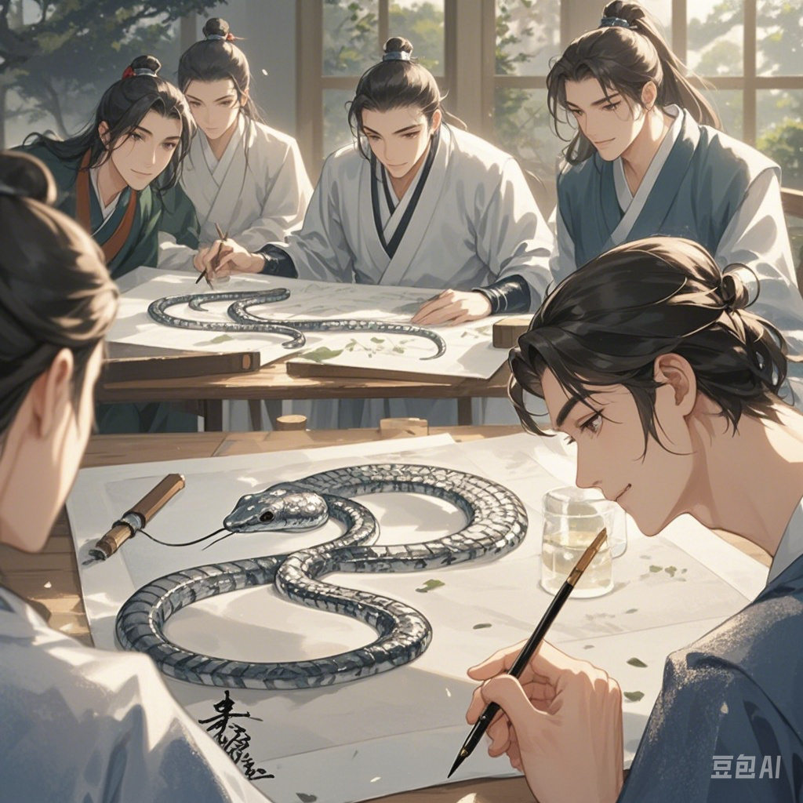
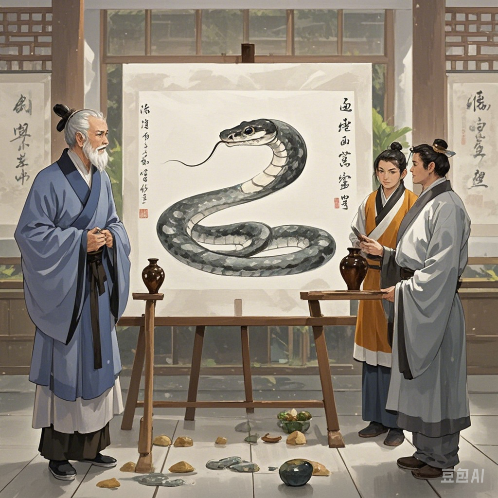

生成的文生视频，描述了成语“画蛇添足”的关键帧和过程：
庭院之中，众人围聚，几坛美酒置于中央。一位长者宣布：“今以画蛇定美酒所属，先成者胜。” 众人皆摩拳擦掌，备好纸笔，一场比试即将开场，空气中弥漫着紧张与期待。
比赛开始，众人低头专注作画。一位画者手法娴熟，不多时，一条蛇的轮廓便跃然纸上。其蛇身灵动，蜿蜒曲折，蛇头高昂，双眼有神，似乎正吐着信子。他稍作停顿，看着自己即将完成的佳作，嘴角微微上扬，已然在心中提前庆祝胜利，周围人投来的目光里有羡慕也有嫉妒。
就在他准备收笔之际，心中忽起一念：“若给蛇添足，定能脱颖而出。” 于是，他不顾常理，执笔画足。他精心勾勒，每一笔都带着自鸣得意，丝毫未觉此举的不妥。此时，其他参赛者或仍在苦思冥想，或因失误而懊恼，庭院中唯有他沉浸在自己所谓的 “创意” 里。
片刻后，有参赛者高呼画完。众人上前查看，只见那幅未添足的蛇画简洁而传神。再看画足之作，虽蛇身精妙，但足却显得格格不入。长者摇头，判定未添足者胜。画蛇添足者呆立当场，懊悔之色溢于言表。望着他人捧走美酒，他心中满是不甘与自责，深知因这多余一举，大好胜局付诸东流，而 “画蛇添足” 的教训也深深印入众人心中，时刻警示着莫要多此一举。